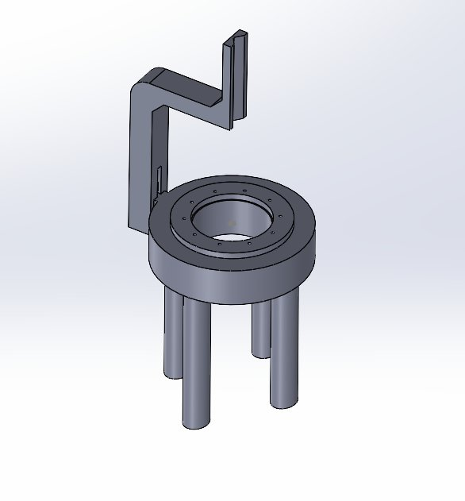

Designed and fabricated test beds to evaluate RF energy delivery from balloon catheter prototypes targeting fetal hypoplastic left heart syndrome — iterating through three generations to resolve tissue contact and tearing issues.
Hypoplastic Left Heart Syndrome (HLHS) is a critical congenital heart defect where the left side of the heart is severely underdeveloped. In fetal interventions, radiofrequency (RF) energy can be used to perforate or ablate tissue in the developing heart to improve outcomes before birth.
The challenge is delivering controlled RF energy precisely to cardiac tissue in a highly constrained, fluid-filled environment — without damaging surrounding structures. This project focused on developing and testing the catheter hardware and test infrastructure to evaluate whether RF energy was sufficient to denature tissue even when submerged in aqueous conditions.
My primary responsibilities were assembling the RF balloon catheter prototypes and designing the test beds used to evaluate them. For assembly, I soldered RF PCB components directly to the balloon outer layer — a delicate process requiring precise control to avoid damaging the balloon membrane while achieving reliable electrical connection.
The test beds were designed to hold porcine cardiac tissue samples in a repeatable position while the catheter delivered RF energy, allowing us to assess whether denaturing occurred consistently under aqueous conditions.
Flat rectangular platform for tissue mounting. Identified issues with uneven load distribution causing tissue tearing at edges and inconsistent PCB contact.
Attempted to address contact issues through positional adjustments. Tearing and contact inconsistency persisted — root cause identified as geometry, not positioning.
Transitioned to circular geometry to distribute load evenly across the tissue sample. Added silicone fixturing to improve tissue positioning and PCB contact repeatability.

Version 3 test bed — circular geometry with 4-post elevation and silicone fixturing
Key insight: The rectangular geometry concentrated stress at the tissue corners during catheter contact, causing tearing that invalidated results. Switching to a circular platform distributed the contact force uniformly around the perimeter — eliminating tearing and improving RF energy transfer consistency.
A core question was whether RF energy could effectively denature tissue even when the catheter was submerged in water — simulating the fluid-filled fetal cardiac environment. The test beds were designed to hold porcine heart tissue samples while the RF PCB on the balloon outer layer delivered energy.
Porcine tissue was used as the test substrate due to its mechanical and biological similarity to human fetal cardiac tissue. Bench-top testing was performed before advancing to tissue-based evaluation, establishing baseline electrical performance of the catheter assembly.
This project was my first exposure to hands-on cardiovascular device development. Soldering RF PCBs to flexible balloon membranes required a level of precision I hadn't worked with before — the margin for error is much smaller than standard PCB work.
More importantly, the iterative test bed design process taught me how to diagnose failure modes systematically. The transition from rectangular to circular geometry wasn't intuitive — it came from carefully analyzing where and how the tissue was failing, then tracing that back to a geometric root cause. That kind of structured problem-solving is directly applicable to structural heart device development.